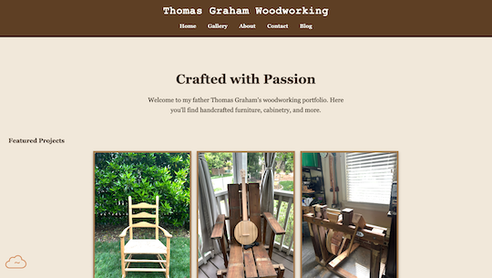

Peer Review 1: Etham Graham

Ethan Graham Client Project Landing Page
Website Evaluation Checklist:
Navigation/Organization
- Page Submission (✔️): submission leads right to the page to be reviewed
- Folder Names (✔️): no caps or spaces in file/folder names
Design
- Readability (✔️): contrast is used correctly (except in footer) and font size is large enough to read comfortably
- CSS Usage (X): site uses standard .css file but it contains unresolved errors
- CRAP Principles (✔️): meets contrast, repetition, alignment, and proximity requirements
Page Structure:
- Structure Elements (✔️): contains a header, main, and footer
- Main Content (✔️): starts with the name of the page as an h2
- Validation (✔️): uses Accumulus for html and css validation
- Footer (X): contains necessary information/links but text color makes it hard to read
- Nav (✔️): contains all necessary links, included on all pages, consistent position on all pages
Other Notes:
- Website is easy to navigate
- Content is all engaging
- The site still contains a lot of validation errors that need to be addressed
- Confirmation message for form submission on contact page is a neat feature